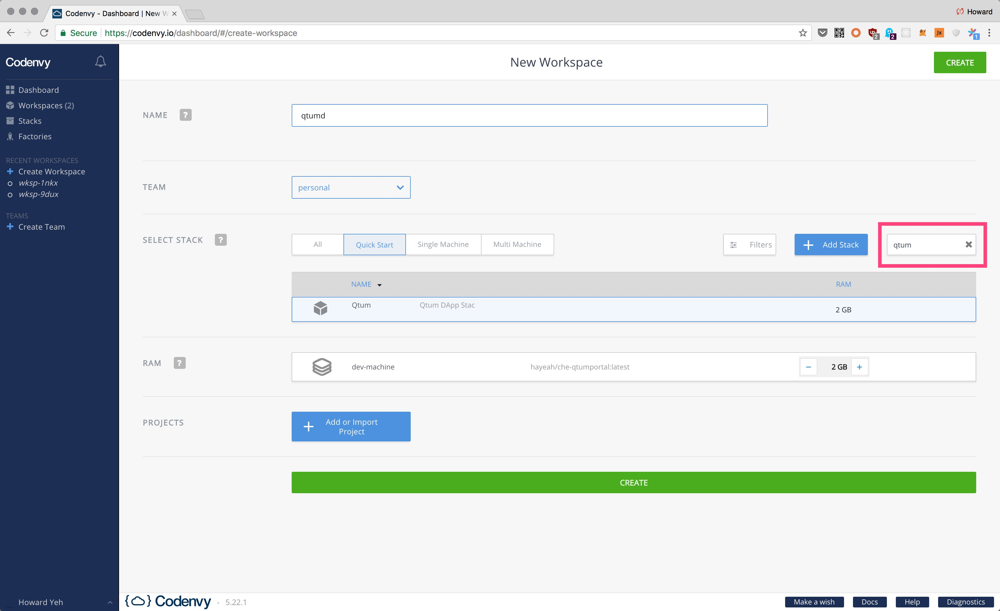
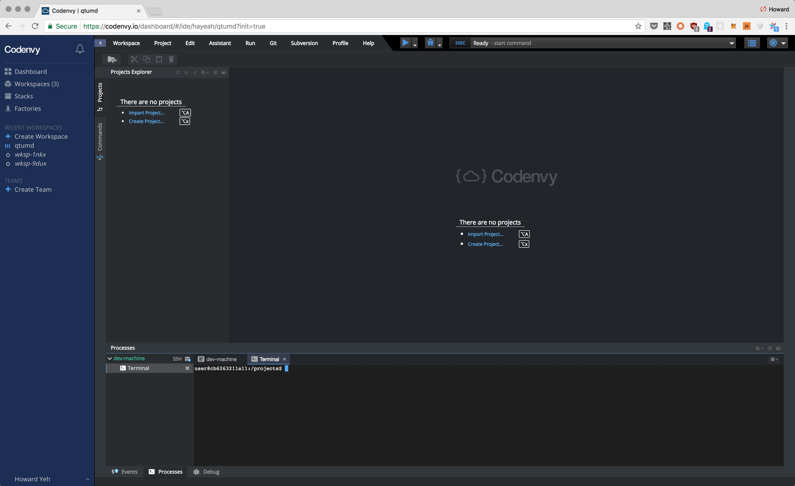

QTUM With Codenvy IDE
If you don't have docker installed on your computer, you may register an account at https://codenvy.io. It gives you a programming environment that you can use in the browser, without having to install anything. This is the easiest way to play around with QTUM.
First, click on the "Build Stack From Recipe" button at https://codenvy.io/dashboard/#/stacks.
Paste in the following recipe:
services:
dev-machine:
image: 'hayeah/che-qtumportal:latest'
Then edit the name and description of the stack, and click "save" to create a stack (i.e. a specification of the qtum programming environment):

Once the stack is created from the recipe, visit https://codenvy.io/dashboard/#/create-workspace to create a workspace (i.e. an actual qtum programming environment):

It takes about 1 minute to startup. The codenvy programming UI looks like:

Verify that the environment is working by running the qcli getinfo command: